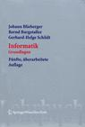

J. Blieberger, B. Burgstaller and G.H. Schildt.
Springers Lehrbücher der Informatik.
Springer, Vienna,
4th edition 2002, 5th edition 2005.
B. Burgstaller, B. Scholz and J. Blieberger.
VDM, Saarbrüecken, April 2008.
B. Burgstaller and B. Scholz.
In Wiley Encyclopedia of Computer Science and Engineering, pp. 2243-2252, Benjamin W. Wah (editor), John Wiley & Sons, Inc., 2008.
Chisoon Jeong, Su Hang and Bernd Burgstaller
In Proc. of the 2013 Winter KITCS Convergence IT Conference (KCIC 2013 Winter),
Seoul, Korea, Dec 2013.
Jongtae Park, Beorn Facchini, Jingun Hong and Bernd Burgstaller
In Proc. of the 34th KIPS Fall Conference,
Seoul, Korea, Nov 2010.
Best paper award (9 out of 528 papers).
Jiin Park, YoonWon Jeong and Bernd Burgstaller
In Proc. of the 5th International Symposium on Embedded Technology,
Daegu, Korea, May 2010.
Taekhoon Kim, Jiin Park, Hwangho Kim, Jongtae Park, Yousun Ko, Kirak Hong and
Bernd Burgstaller
In Proc. of Institute of Embedded Engineering of Korea,
Jeju Island, Korea, Nov 2009.
Best presentation award, among top 17 out of 122 presentations.
Yoojin Park
Technical Report TR-0003, ELC Lab, Dept. Computer Science, Yonsei University, 2017.
[pdf]
Jingun Hong, Hwangho Kim, Kirak Hong, Sungho Kim, Taekhoon Kim, Jiin Park, Yousun Ko and Bernd Burgstaller
Technical Report TR-0002, ELC Lab, Dept. Computer Science, Yonsei University, 2009.
Hwangho Kim, Kirak Hong, Sungho Kim, Taekhoon Kim, Jiin Park, Yousun Ko, Bernd Burgstaller and Bernhard Scholz
Technical Report TR-0001, ELC Lab, Dept. Computer Science, Yonsei University, 2008.
[pdf]